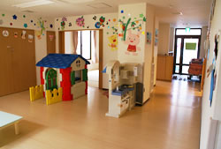

事業所内託児施設
事業所内・病院内託児施設企画運営サービス
企業内託児所、院内保育所等、託児所のコンサルティングから開設・運営まで、保育サービスのアウトソーシングをお任せください。
企業や病院の一角に託児所を設けることで、子どものいる社員が安心して働ける環境をつくることが出来ます。
福利厚生のための企業内託児所をはじめ、病院の院内保育所、マンション内託児所など。託児施設づくりのプロフェッショナルとして
豊富な実績を誇るアピカルなら、保育施設の設計企画から運営全般まで、経済性・効率面・安全面を考えた最適の企画・提案ができます。
企業や病院の一角に託児所を設けることで、子どものいる社員が安心して働ける環境をつくることが出来ます。
福利厚生のための企業内託児所をはじめ、病院の院内保育所、マンション内託児所など。託児施設づくりのプロフェッショナルとして
豊富な実績を誇るアピカルなら、保育施設の設計企画から運営全般まで、経済性・効率面・安全面を考えた最適の企画・提案ができます。
事業所内保育室の運営
開設したいけどどうして良いか分からない。
開設しているけれど、もう少し時間を延ばしたいので、その時間だけ保育士を派遣して欲しい。
常設の保育士がいるけれど、休んだときに手伝って欲しい。
高まる「育児」サービスへのご要望にお応えして、アピカルでは従業員の採用や福利厚生のための事業所内託児所・企業内託児所・
病院の院内保育所、またはマンション内託児所、その他さまざまな商業施設のサービス機能としての託児施設など。
用途や規模に合わせた保育施設の運営全般をお任せ頂けます。「利用する側・設置する側」双方の立場を考慮し、
貴社のニーズに合う託児ルームの企画・運営などのサポートをします。
デパートや量販店内での託児ルーム ／ ホテル内の託児ルーム ／ 企業や病院から委託をうけて運営する託児所
マンション併設の託児ルーム ／ 映画館やアミューズメント施設内での託児ルーム
病院の院内保育所、またはマンション内託児所、その他さまざまな商業施設のサービス機能としての託児施設など。
用途や規模に合わせた保育施設の運営全般をお任せ頂けます。「利用する側・設置する側」双方の立場を考慮し、
貴社のニーズに合う託児ルームの企画・運営などのサポートをします。
デパートや量販店内での託児ルーム ／ ホテル内の託児ルーム ／ 企業や病院から委託をうけて運営する託児所
マンション併設の託児ルーム ／ 映画館やアミューズメント施設内での託児ルーム
アピカルの保育室の特徴
1
利用状況に応じた料金で経費削減
ご利用者の勤務体制とお子さまの人数によって時間帯別に最適な人数の保育者を配置し、利用料金は15分単位の必要保育者数で計算します。
2
心安らぐ暖かい保育
自然や地域とのふれあい、小さな冒険等のワクワクする体験を通じて、のびのびとした心の解放を促します。
3
可能性を信頼し自主性を育てる
子どもたちがいつも活き活きと目を輝かせる“やってみたくなる環境”作りを行います。
4
思いやりの心を育てる
子どもたちの心を大切にし、思いやりのある態度で接することで、身の回りの人に対する思いやりが芽生えると考えています。
5
無駄のない費用
6
保育室運営のスペシャリスト
7
充実した保育内容
8
長年の経験と実績
事業所内保育施設設置・運営プラン
●運営ソフトプランニング
| 場所 | 事業所内に一定のスペースを用意していただきます。（新設及び改装等に国からの助成金あり） |
| 開設時 | 打ち合わせの上、決定いたします。 |
| 対象年齢 | 基本的に0歳から未就学児（小学校低学年は相談に応じます）までといたします。 |
| 面積（広さ） | お子様一人につき1.98㎡以上のスペースを用意していただきます。 |
●スペースプランニング
| 場所 | 事業所内に一定のスペースを用意していただきます。（新設及び改装等に国からの助成金あり） |
| お客様のスペースに合わせてルームレイアウトをご提案 |
●備品・遊具
お子様の年齢・人数・ご予算などを考慮の上、相談させていただきます。
●賠償責任保険
万が一の場合に備えて、ベビーシッター総合保障制度に加入しております。
●助成金
事業所内保育施設設置・運営等助成金…厚生労働省 ※病院内の場合は他に利用可能な助成金がございます。
企業内託児施設
こんなことで
お悩みでは
ありませんか？
お悩みでは
ありませんか？
結婚や出産を理由に退職する従業員が多い…
保育室の運営に関して面倒なことが多く、本来の仕事に専念できない…
事務作業や助成金の申請に手間がかかりすぎる
従業員の希望に添った保育をしてくれない…
保育室を開設したくても、どうすれば良いのかわからない
企業内保育のメリット
1
従業員が仕事に専念できます
充実した保育体制により、急な残業が入っても安心して働くことができます。これにより、患者さんへのサービス品質の向上が期待できます。2
心安らぐ暖かい保育
二重保育のご希望にも対応いたしますので、集団生活や広い園庭での運動も可能です。
3
万が一の時の対応も万全
事故防止のため、危機管理（事故想定時のマニュアルや訓練）や救命研修を実施しております。また、万が一に備え、
当社で補償制度（賠償・傷害）にも加入いたしております。
4
ご担当者の負荷は最小限
保育者の面接や労働管理、保護者とのご相談、二重保育への対応当社にてお引き受けいたします。
安全・高品質・低価格の保育施設の設計・什器のなど、
豊富な経験をもとにご提案させていただきます。
5
助成金の有効利用をご支援
煩雑な助成金の申請や資料作成のお手伝いもご相談に応じます。
6
保育室の開設もご支援
保育施設の設計、必要な什器のご提案、備品のご用意など、豊富な経験をもとにご提案させていただきます。
7
急な残業もＯＫ
8
お子様の軽い病気にも対応いたします
企業内保育Q&A
Q
保育室の利用希望者はいるが、少数なので、単独で保育室を作るのは難しい。
A
近隣の企業に、同じようなお考えの企業・病院等がございましたら、合同で保育室を開設することも可能です。
ご相談下さい。
Q
保育室を作りたいが事業所の中に場所がない。
A
保育室を作るスペースがない場合は、各々のご事情に応じて検討しております。必要に応じ、物件探しのお手伝いも致します。面積その他の条件を満たした場合には、設置費の助成金を受けることが可能です。
Q
大学に設置する場合、職員だけでなく、学生の利用にも対応できますか？
A
もちろんです。大学院生・留学生・研修医等の皆様にもご活用頂くことができます。
院内の託児施設
こんなことで
お悩みでは
ありませんか？
お悩みでは
ありませんか？
結婚や出産を理由に退職する看護師が多い…
保育室の運営に関して面倒なことが多く、本来の仕事に専念できない…
事務作業や助成金の申請に手間がかかりすぎる
看護師の希望に添った保育をしてくれない…
保育室を開設したくても、どうすれば良いのかわからない
院内保育のメリット
1
看護師が仕事に専念できます
充実した保育体制により、急な残業が入っても安心して働くことができます。これにより、患者さんへのサービス品質の向上が期待できます。2
幼稚園への送迎にも対応いたします
二重保育のご希望にも対応いたしますので、集団生活や広い園庭での運動も可能です。
3
万が一の時の対応も万全
事故防止のため、危機管理（事故想定時のマニュアルや訓練）や救命研修を実施しております。また、万が一に備え、
当社で補償制度（賠償・傷害）にも加入いたしております。
4
ご担当者の負荷は最小限
保育者の面接や労働管理、保護者とのご相談、二重保育への対応当社にてお引き受けいたします。
安全・高品質・低価格の保育施設の設計・什器のなど、
豊富な経験をもとにご提案させていただきます。
5
助成金の有効利用をご支援
煩雑な助成金の申請や資料作成のお手伝いもご相談に応じます。
6
保育室の開設もご支援
保育施設の設計、必要な什器のご提案、備品のご用意など、豊富な経験をもとにご提案させていただきます。
7
一人ひとりのお子様の個性を伸ばす
充実した保育内容
8
24時間保育はもちろんのこと、
急患・夜間救急稼動等にも対応
9
次世代育成支援事業者としてのアピール
10
お子様の軽い病気にも対応いたします
9
質の高い看護婦・職員の求人ができます
10
利用状況に応じた料金体系で無駄な経費の削減
小児科病棟保育
医師・看護師のご指示の基、入院患者様のお世話をいたします。
プレイルーム設置等のご相談にも応じますので、お気軽にお問い合せ下さい。
プレイルーム設置等のご相談にも応じますので、お気軽にお問い合せ下さい。
通院患者様のお子様の託児
小さなお子様を持つ患者様が気兼ねなく治療を受けられるためのご提案です。
当社にご依頼いただくメリット
>
経費の削減
業務の簡素化
保育内容の充実
自社での採用・教育・健康診断・法定福利費・賞与・退職金・保育士のスケジュール管理などを考えますと
委託されたほうが病院様にはメリットは多分にあります。
委託されたほうが病院様にはメリットは多分にあります。
病院内保育受託の助成金について
■院内保育事業運営費補助・・・都道府県庁
※病院内保育所の助成金に関しては、各都道府県へお問い合わせください。
■事業所内保育施設設置・運営等助成金・・・厚生労働省
※病院内保育所の助成金に関しては、各都道府県へお問い合わせください。
■事業所内保育施設設置・運営等助成金・・・厚生労働省

院内保育Q&A
Q
現在在籍中の看護師には利用希望者が少ないが、看護師が本当に集まるでしょうか？
A
病院の立地条件等により一概には言えませんが、開設時に在籍児１～２名でスタートした場合でも、「良い保育室ができた」と看護師さん同志の情報交換により、１年後にはほとんどの保育室が定員一杯になります。
Q
料金システムが、変動するので、予算の計上が難しい。
A
当社のシステムは児童数の増減に対して無駄を作らないことが特長ですが、児童数が多く、増減の幅が少ない保育室の場合は、実績に応じ定額での料金設定も可能です。実情を詳しく伺った上で、病院にとってメリットの大きい方法をご提案いたします。
Q
自社で運営している保育室を委託に切り替えたいが、職員、利用者の事が心配です。
A
経営の効率化のため、直営から委託への切り替えを考えている病院が大変増加しております。その場合一番問題となる点が、現職員の処遇です。各保育者とは個別にお話しをさせて頂き、条件が見合う場合は引き続き当社の職員として勤務をお願いする事もあります。スムーズな移行のために充分にご相談をしながら進めて参ります。利用者には説明会を開き、ご不安を抱いているお母様に、当社の保育内容を納得の行くまでご説明させて頂いております。切り替え時には、これまでの保育内容を良く伺い、急激な環境の変化がないよう、充分配慮致します｡
Q
保育室を作りたいが事業所の中に場所がない。
A
保育室を作るスペースがない場合は、各々のご事情に応じて検討しております。必要に応じ、物件探しのお手伝いも致します。面積その他の条件を満たした場合には、設置費の助成金を受けることが可能です。
Q
小規模な病院・医院なので、保育室の利用希望者はいるが単独で保育室を作るのは難しい。
A
通園可能な地域内に同じようなお考えの病院・医院がございましたら、合同で保育室を開設することも可能です。ご相談頂ければ当社でコーディネートをさせて頂きます。
幼稚園・保育園
こんなことで
お悩みでは
ありませんか？
お悩みでは
ありませんか？
春、新入園児がいっぱい、新卒の先生だけじゃ心配。
経験豊富なベテランの先生を担任補助にできたら
いまや幼稚園の定番メニューの預かり保育 でも先生の確保が大変
「子育支援」の切り札未就園児教室は幼稚園のイメージアップに最適。
だけど幼稚園の先生たちは未満時が苦手、そんな時ベテランの保育士さんが
いたら安心してプリスクールの運営ができます
担任の先生がバスに乗ってしまう朝、徒歩の子どもたちのお世話は？
添乗の先生を別にすればそんな悩みも解決です。
先生の休暇が重なってどうしても人数が足りない。
そんなときに補助スタッフが代務いたします。
●スタッフは全員有資格者、さらに社内で独自の研修も受けてキャリアアップした人材ばかりです。
●専任のスタッフが休みの場合も、代務スタッフが勤務するので安心です。
●時間単位でご生産いただく方式から、月額料金を設定した年間契約まで、
お客様の実情にあった契約形態をお選びいただけます。
お客様の実情にあった契約形態をお選びいただけます。
●いずれの契約も料金は通常の派遣より安価に設定。 園の規模の大小を問わず、ご利用いただけます。
●運営やシフトのご相談も承っておりますので、お気軽にお問い合わせください。